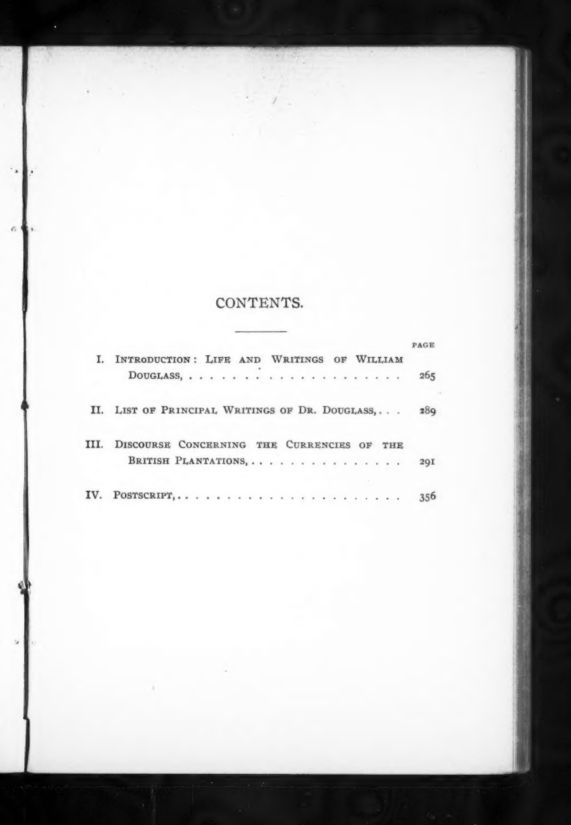

Douglass, 1740: quem perdia com o papel-moeda das colônias?
Leitura: 15 min
Charles J. Bullock reedita o panfleto em que William Douglass, médico de Boston, acompanhou a depreciação do papel-moeda das colônias britânicas, contou quem perdia com ela e defendeu a volta à prata.


Em 1712, quando a prata valia 8 xelins a onça em Boston, um carpinteiro ganhava 5 xelins por dia, tudo em dinheiro; foi a esse preço que se construiu a Town House. Em 1739, com a prata a 29 xelins a onça, ele recebia 12 xelins, e metade em mercadorias de loja, cobradas com acréscimo de 25% ou mais sobre o preço em dinheiro. Antes, um dia de trabalho comprava 15 libras-peso de manteiga; agora, 7.
O exemplo é de William Douglass, médico escocês estabelecido em Boston, em A Discourse Concerning the Currencies of the British Plantations in America, publicado sem nome do autor em Londres, em 1739, e reimpresso em Boston em 1740, já com o seu nome. Em outubro de 1897, o panfleto saiu como nº 5 do segundo volume dos Economic Studies, editado por Charles J. Bullock. A edição traz uma introdução sobre a vida e os escritos de Douglass, a lista das suas principais obras, o texto de 1740 com notas do editor que conferem os números do autor e o pós-escrito acrescentado à reimpressão londrina de 1751.
A página de rosto tem como epígrafe uma frase do próprio Discourse, que resume o seu argumento.
“é absurdo imaginar que um governo encontre dinheiro para o seu povo” (it is absurd to imagine that a Government finds Money for its People)
Quem era William Douglass?
Segundo Bullock, Douglass nasceu em Gifford, no condado de Haddington, na Escócia, por volta de 1691. Estudou medicina em Edimburgo, Leiden e Paris, chegou a Boston em 1716, passou o ano seguinte nas Índias Ocidentais e fixou-se na cidade em 1718, onde viveu até morrer, em 1752. Dizia ser, em 1721, o único médico regularmente diplomado de Boston. O seu estudo de uma epidemia de 1735 e 1736 foi reimpresso em 1825 num periódico médico da Nova Inglaterra.
Na epidemia de varíola de 1721, foi um dos principais opositores da inoculação, promovida por Cotton Mather e praticada por Zabdiel Boylston. Pelos números de Boylston, de 286 inoculados morreram seis. Bullock registra que Douglass não rejeitou a prática por inteiro, mas a via como experimento feito sem a devida cautela, e que em 1752 já a usava na própria clínica.
Fora da medicina, interessou-se por botânica, com uma coleção de cerca de 1.100 plantas americanas, por meteorologia, astronomia e geografia; publicou um almanaque para 1743 e começou um mapa da Nova Inglaterra que não chegou a terminar. Presidiu a Scotch Charitable Society de 1736 até a morte. A cidade de Douglas, em Massachusetts, recebeu o seu nome em 1746, e ele lhe doou £500 em moeda colonial e terras para escolas gratuitas. A sua obra principal, o Summary of the British Settlements, de 1749 e 1751, estava na biblioteca de Adam Smith e foi usada duas vezes em A Riqueza das Nações.
“o honesto e franco Doutor Douglass” (the honest and downright Doctor Douglass)
Bullock reconhece que o Summary foi muito criticado por historiadores do século XIX, por imprecisão e parcialidade, e admite que o autor tinha preferências fortes, estilo descuidado e um método histórico inadequado. Sustenta, porém, que os críticos foram longe demais, e dá um exemplo: Douglass ridicularizara o plano da expedição contra Louisbourg, em 1745, e quase todos os historiadores posteriores, diz o editor, confirmaram as suas críticas. Sobre comércio, moeda e tributação das colônias, Bullock o considera em geral uma autoridade confiável.
O editor diz também não ser possível omitir as principais aversões de Douglass, que nos livros e nos jornais dava livre curso a preconceitos e queixas. Segundo Bullock, Douglass odiava os índios, que considerava apenas uma espécie gregária de homens-brutos, e chamava os franceses de incômodo comum e perturbadores da Europa. Na mesma lista entram pessoas: o bispo Berkeley, homem caprichoso cuja água de alcatrão nunca deixava de lhe provocar sarcasmo; o pregador Whitefield, um vagabundo cujos sermões custavam a Boston £1.000 cada, ao tirar o povo do trabalho; o governador Shirley e o almirante Knowles, que o processou por difamação. Em nota, Bullock reproduz o comentário de Douglass de que os índios inclinados à religião cristã eram tratados como os cristãos de seitas diferentes se tratam entre si, condenados se não aceitam a fé do padre. Alguns biógrafos, registra ainda, queixaram-se de que Douglass vivia em atrito com os colegas de profissão e de que, com o orgulho de estrangeiro escocês, desprezava o povo que lhe dava o sustento; Bullock responde lembrando que, quase cinquenta anos depois da morte de Douglass, três médicos eminentes sangraram Washington até a morte, o que, para o editor, mostra a procedência das críticas do médico às práticas da época.
Os temas econômicos iam além da moeda. Douglass descreveu o wampum, o Banco de Amsterdã, os projetos de John Law e a Bolha dos Mares do Sul, usou as estimativas de Halley para calcular populações e escreveu sobre tributação colonial: condenava a capitação como injusta e defendia impostos sobre vinhos, bebidas destiladas e outros luxos, licenças para tavernas e selos sobre documentos. A depreciação também lhe custou caro: segundo Bullock, ele perdeu muito com a moeda da colônia durante o governo de Shirley. Ao morrer, o seu patrimônio foi avaliado em cerca de US$ 10.617.
Como as colônias chegaram ao papel-moeda?
Quando Douglass escreveu, lembra Bullock, o problema tinha mais de cinquenta anos. Massachusetts emitira papel-moeda em 1690 para pagar uma expedição militar malsucedida e manteve uma política moderada por quase 25 anos. Depois vieram a agitação por bancos de empréstimo, públicos ou privados, e a acumulação de bilhetes emitidos para despesas correntes. Por volta de 1712, o papel da Nova Inglaterra começou a se depreciar, e quase trinta panfletos sobre o tema saíram entre 1714 e 1721.
Bullock põe o Discourse entre as melhores discussões monetárias do século XVIII, logo abaixo dos Political Essays de Pelatiah Webster. Douglass, diz, não desenvolveu uma teoria completa da moeda, mas entendia a lei de Gresham, sabia que um país com comércio exterior precisa do meio de troca universal e sustentava, com a firmeza de um Ricardo, que a alta da prata era sinal e resultado da depreciação do papel. O editor observa ainda que o panfleto, reeditado por J. R. McCulloch em 1857 como anônimo, vinha sendo citado sem autoria, e reúne as provas internas de que é de Douglass. Entre essas provas está a aversão aos franceses, expressa nas páginas 297 e 299 do Discourse em termos muito parecidos com os do Summary.
Por que a prata?
O Discourse parte de um princípio: todo comércio é, no fundo, troca de mercadorias, e a prata, a menos variável delas, tornou-se por consentimento geral o meio de troca. Um país sem comércio externo poderia adotar qualquer moeda por lei ou costume; um país que comercia precisa da prata, ou de letras de câmbio e notas promissórias pagáveis em prata, sob pena de trapacear ou de comerciar em desvantagem.
Douglass lista as manipulações das unidades de conta na Europa. Na Inglaterra, a libra de conta caíra a cerca de um terço do seu valor original em prata; na Holanda, a um sexto. A França, por recunhagens a partir de 1689, levara o marco de prata de 27 para 80 libras. Os experimentos com papel, como o de John Law na França, em 1720, e o do barão Görtz na Suécia, terminaram, segundo ele, com a volta à moeda metálica e a recuperação do comércio.
Nas colônias, a primeira fraude teria sido aceitar o peso de oito, que valia 4 xelins e 6 pence esterlinos, como se valesse uma coroa de 5 xelins, perda de 11% para os credores na Inglaterra. Depois, moedas leves e pesadas circularam juntas, e a má moeda expulsou a boa. A lei da proclamação limitou o peso de oito a 6 xelins em todas as colônias depois de 1709, mas, diz Douglass, só Barbados e Bermudas a observavam.
Como Massachusetts e Rhode Island emitiam?
Massachusetts, que Douglass chama de pioneira do papel-moeda nas colônias, fez a primeira emissão, de £40.000, em 1690 e 1691, para pagar a expedição contra o Canadá. No início, os bilhetes eram resgatados por impostos no mesmo ano ou no seguinte. Depois, o resgate foi sendo adiado: dois anos em 1704, três em 1707, quatro em 1709, até treze em 1722. A prata, fixada pelos tribunais em 8 xelins a onça em 1706, chegara a 29 xelins em 1739, depois de 26 anos de depreciação contínua.
Rhode Island, colônia de cerca de 18 mil almas, é o seu exemplo dos empréstimos públicos em papel. O primeiro empréstimo, de 1715, teve o pagamento adiado até 1738; nesse intervalo, o ágio do câmbio passou de 65% para 400%, e quem recebera o equivalente a £100 esterlinas devolveu o equivalente a £33. Os tomadores, chamados sharers, pagavam 5% ao Tesouro e emprestavam o dinheiro a 10%. Com esse papel, acusa Douglass, Rhode Island comprava mercadorias em Massachusetts, que aceitava os seus bilhetes.
Quem perdia com a depreciação?
A primeira parte do argumento enumera os prejudicados. Os trabalhadores e artesãos recebiam salários que não acompanhavam a prata, como o carpinteiro da abertura, e eram obrigados a aceitar notas de loja. Os pastores de Boston, que antes recebiam £3 por semana, recebiam agora de £6 a £8, equivalentes, pelas contas do autor, a 40 xelins do tempo antigo. Os comerciantes britânicos, que vendiam a longo prazo, eram pagos em moeda que valia menos que a contratada. E viúvas, órfãos, fundos de caridade e credores em geral perdiam o principal: do outono de 1733 ao de 1734, a prata subiu de 22 para 27 xelins a onça.
Douglass via no papel também a explicação dos juros altos. Se o principal perdia nesse ritmo, o credor precisaria cobrar 28% ao ano só para não perder, contra os 6% legais. Os defensores do papel, que o prometiam como remédio contra a usura, obtinham assim o contrário. E o longo prazo, vício que andava junto com a moeda depreciada, incentivava devedores a adiar pagamentos, porque cada mês de atraso reduzia o valor real da dívida.
Mais papel significa mais moeda?
A tese central é que as emissões grandes e repetidas causam a alta da prata e do câmbio, e que esta as segue como as marés seguem as fases da Lua. Quando se emite só o que se resgata, prata e câmbio ficam parados; quando se emite menos, caem. Douglass ilustra com a sequência de emissões da Nova Inglaterra e com Barbados, onde uma emissão de £80.000 sobre garantia de terra perdeu logo 40% em relação à prata, até ser suprimida por ordem de Londres. Antes dela, em 1702, por conselho de um certo Mr. W., da Nova Inglaterra, Barbados emitira £16.000 sobre o fundo do imposto sobre negros (Negroe Tax), que chegaram a circular perto do par. Na sequência da Nova Inglaterra, uma guerra dispendiosa contra os índios exigiu grandes emissões, e a prata subiu de 14 para 16 xelins a onça; na Carolina do Sul, as emissões pagaram, além das despesas de governo, as expedições contra os índios da Carolina do Norte, em 1711, e contra os índios do Sul, em 1715.
“quanto mais papel-moeda emitimos, menor se torna o valor real do nosso meio circulante” (the more Paper Money we emit our real Value of Currency or Medium becomes less)
Para Douglass, nenhum país tem crédito ilimitado. Como um comerciante cujas notas valem apenas o seu crédito real, por mais que as multiplique, um país que estica o crédito além de certo ponto só deprecia os bilhetes. A pressão política, explica, vinha da composição do eleitorado: em muitas colônias, a maioria tornara-se devedora, e os representantes, proprietários de terras endividados, ganhavam quando as emissões elevavam o valor nominal da terra e reduziam o valor real das dívidas.
Douglass recorre a comparações entre povos para descrever o abuso. Assim como o gosto francês por construir fortes e o gosto espanhol pela devoção, na construção de igrejas e conventos, se pervertem quando estes se tornam viveiros de ociosidade e outros vícios, diz, a liberdade e a propriedade inglesas são às vezes abusadas em muitas das colônias, até o nivelamento e a licenciosidade; todos os homens são naturalmente iguais, escreve, mas a sociedade requer subordinação. Em outro passo, compara cada emissão de papel, que vê como um imposto pesado sobre os colonos, aos negros da Guiné que vendem a própria prole como escravos para obter algum dinheiro imediato.
Que remédios ele propunha?
A última parte examina projetos. Como paliativo, Douglass propõe que o governador e o conselho, ouvidos os comerciantes, fixem uma ou duas vezes por ano o câmbio sobre Londres ou o preço da prata, e que as dívidas sejam pagas pelo valor vigente na data do contrato. Sugere ainda autorizar uma sociedade de homens de posses a emitir notas lastreadas em prata e aceitar no Tesouro só os bilhetes de Massachusetts, com novas emissões pagáveis em prata ou ouro numa data fixa.
Aos bancos de terra, à moda de Law, e aos bancos de produtos, objeta que a terra não pode ser embarcada como mercadoria nem servir de meio no comércio exterior, e que armazéns de produtos exigiriam inspeção, preços e garantias difíceis de administrar. Um projeto de £450.000 sobre terra e produtos, com doze diretores, lhe parece exceder as mais de cem bolhas lançadas em Londres em 1720. Pede, por fim, gradualismo: que o Parlamento britânico não use métodos súbitos e que, em emergências, os governos emitam notas aceitas só no pagamento de impostos. Bullock anota que a regulação parlamentar desejada por Douglass veio em 1751 e em 1764.
O pós-escrito responde a um panfleto anônimo a favor do papel, An Enquiry, cujas proposições Douglass reorganiza como paradoxos para refutá-las uma a uma, a começar pela tese de que bilhetes sem fundo nem prazo, aceitos só por consentimento comum, seriam os únicos de valor. Bullock o inclui como amostra dos escritos polêmicos do autor. Ao exemplo da Carolina do Sul, invocado pelo panfleto a favor do papel, Douglass responde que a prosperidade da província vinha do solo e do clima, do arroz e de um vasto território indígena vizinho que fornecia grandes quantidades de peles de veado, e que os grandes negócios ali não se faziam em papel.
Na minha leitura
Na minha leitura, o panfleto é um estudo precoce dos efeitos distributivos da inflação. Douglass não tem uma teoria quantitativa formal, mas faz o essencial: mede a moeda em termos reais, mostra que emissões adicionais podem reduzir o valor total do meio circulante e identifica quem ganha e quem perde, devedores contra credores, tomadores de empréstimos públicos contra o Tesouro, uma colônia contra a vizinha que aceita os seus bilhetes.
O caso de Rhode Island antecipa um tema permanente: quando a emissão é feita por empréstimo a particulares a juros abaixo da perda esperada do principal, o ganho da senhoriagem não fica com o público, mas com quem tem acesso ao crédito. A proposta de fixar periodicamente o câmbio e pagar as dívidas pelo valor da data do contrato é, no fundo, indexação, a resposta clássica de economias que convivem com moeda instável sem conseguir estabilizá-la.
Glossário
- Bilhetes de crédito (bills of credit)
- papel-moeda emitido pelos governos coloniais, resgatável por impostos ou por pagamento de empréstimos.
- Peso de oito (piece of eight)
- moeda espanhola de prata que circulava nas Américas; equivalia a oito reales.
- Unidade de conta
- denominação em que se fixam preços e dívidas, como a libra, independentemente da moeda física.
- Ágio do câmbio
- percentual a mais da moeda local necessário para comprar uma libra esterlina.
- Lei de Gresham
- tendência de a moeda pior circular e a melhor ser entesourada ou exportada.
- Banco de terra (land bank)
- esquema de emissão de notas garantidas por hipotecas de terra.
- Notas de loja (shop notes)
- vales pagos a trabalhadores, resgatáveis em mercadorias de um comerciante.
- Senhoriagem
- ganho de quem emite moeda, igual à diferença entre o valor da moeda e o custo de produzi-la.
Fontes
- Introduction: Life and Writings of William Douglass (pp. 265–288). Internet Archive (número completo, PDF)
- List of Principal Writings of Dr. Douglass (pp. 289–290). Internet Archive (número completo, PDF)
- A Discourse Concerning the Currencies of the British Plantations in America (pp. 291–355). Internet Archive (número completo, PDF)
- Postscript (pp. 355–375). Internet Archive (número completo, PDF)
- Número completo digitalizado (domínio público): Internet Archive.
Documento em domínio público (EUA, publicado antes de 1931), via JSTOR Early Journal Content e Internet Archive. Resumo e comentário do autor deste site, sem afiliação com a American Economic Association. Encontrou um erro? Escreva: a correção é publicada no próprio texto, com data.
← ES 10 · Willcox, 1897: o censo de 1890 errou a população do país? ES 12 · Willcox, 1897: onde viviam os americanos do censo de 1890? →